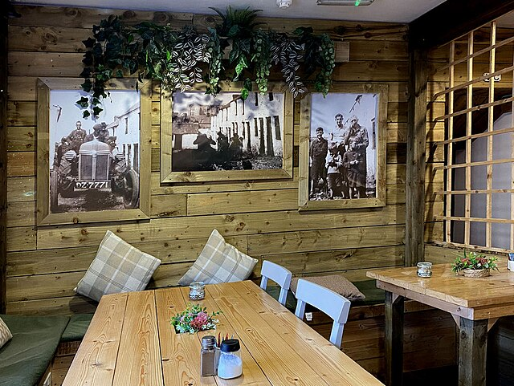
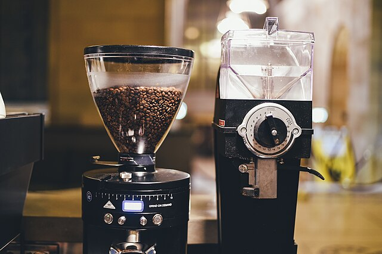
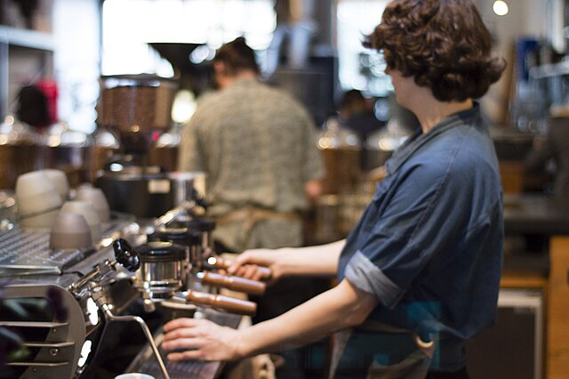
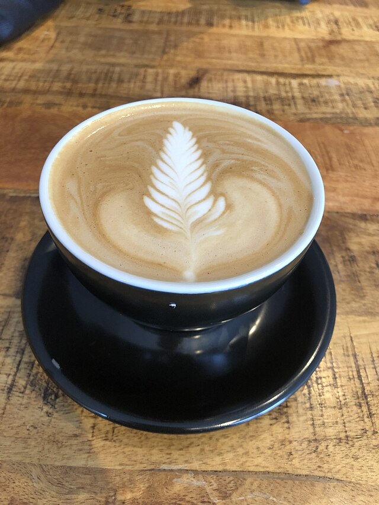
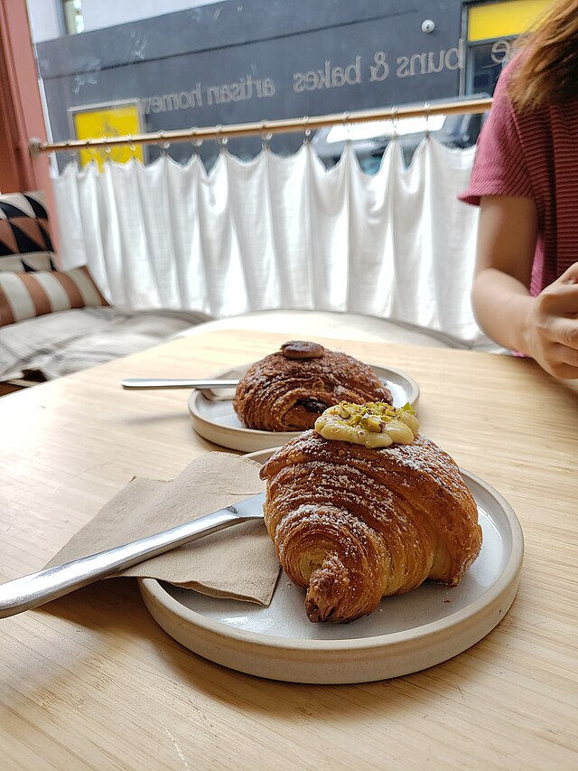
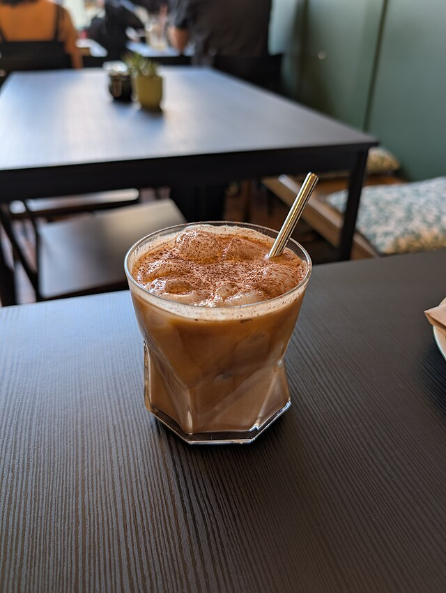

Our Story
Tar Heel Coffeehouse started in 1922 and has been a staple of the Chapel Hill community ever since We sustainably source our coffee from Guatemala and get our baked goods from a local bakery. All of our syrups are made in house, except for our sugar free syrups.
We strive to make our cafe a community and safe space for all people. Our values are at the core of our business so we pay all of our employees a living wage and give discounts for bringing your own coffee mug. So come support your local community and visit Tar Heel Coffeehouse today!
Our Home





